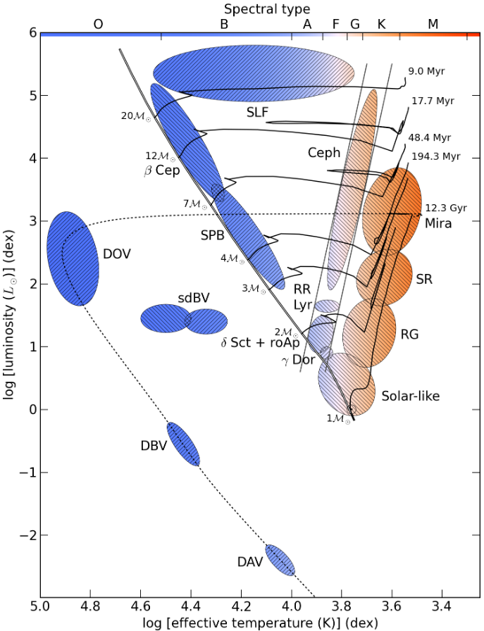
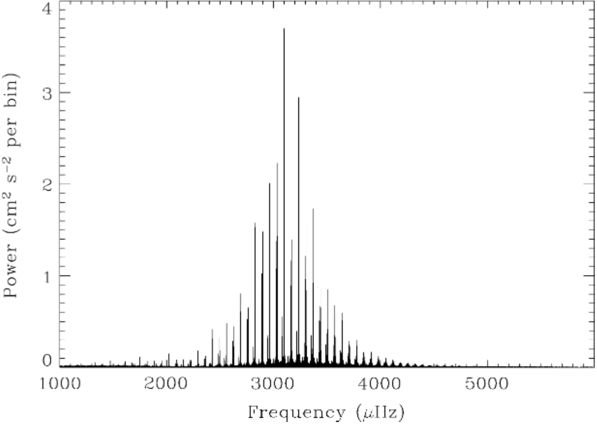
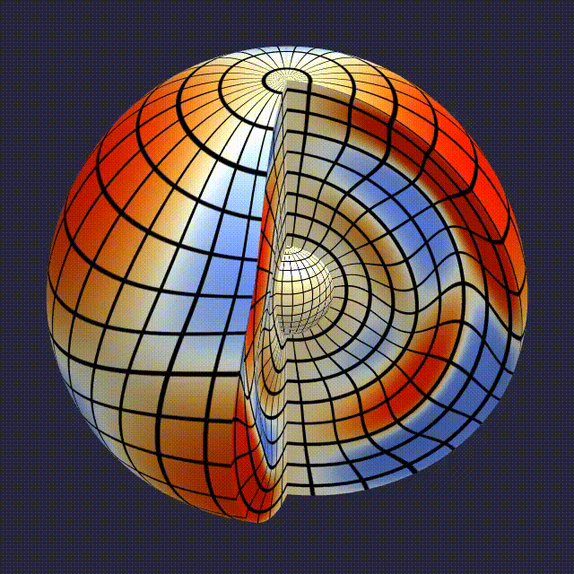
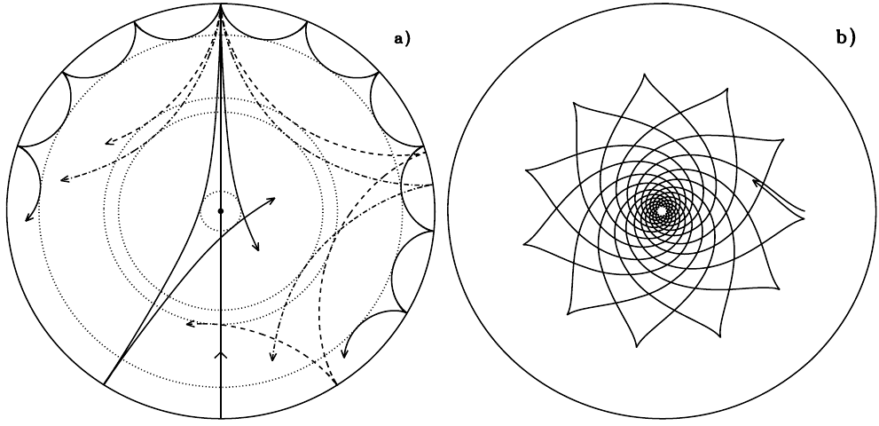
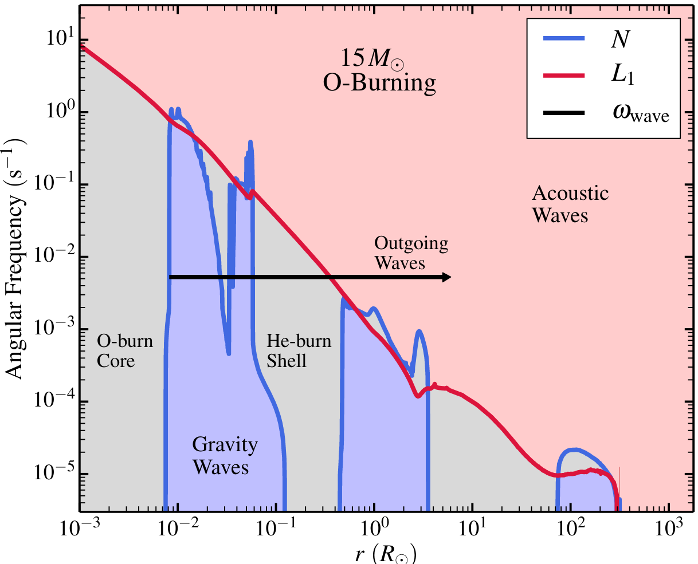
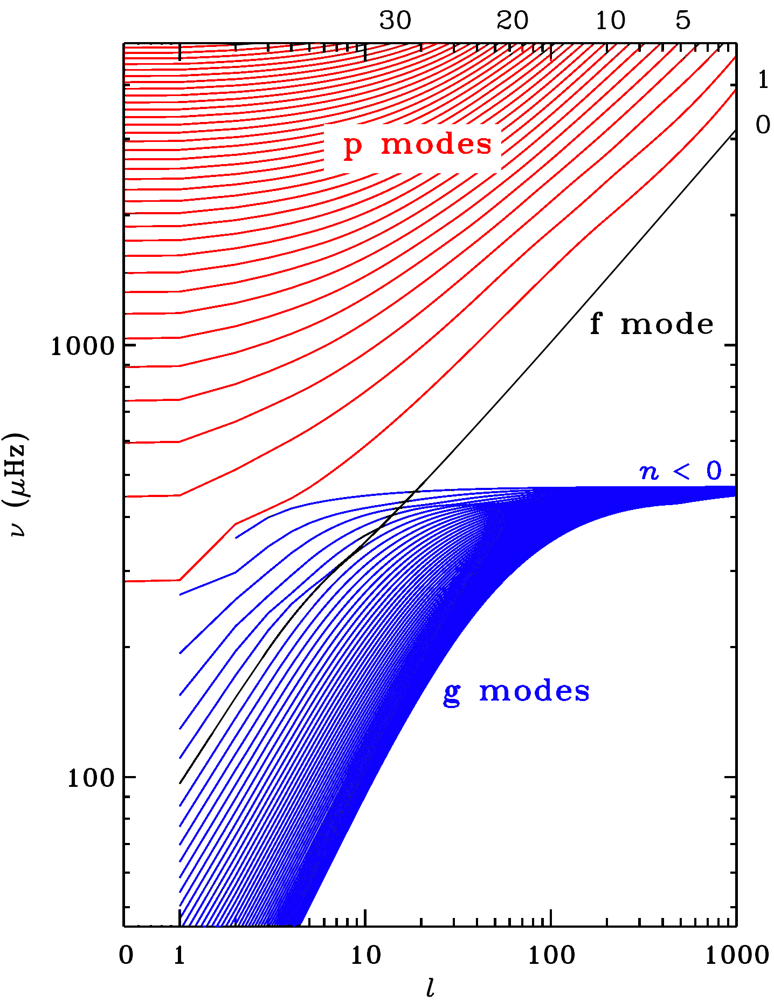

Materials: Tassoul 1980, Christensen-Dalsgaard 1984, Tassoul 1990, Aerts, Christensen-Dalsgaard, Kurtz 2010, Aerts 2021.
How to see inside stars?
Stars are optically thick (allowing us to treat them as black bodies inside and excluding the atmosphere), and we have developed a physical model for their interior, which can be tested indirectly using stellar (and transients!) populations.
How can we directly see inside the stars?
- Neutrinos: we have seen that neutrinos can freely stream out of the cores, which has provided direct evidence for thermonuclear reactions in the Sun, and (as as we will see) their role in the collapse of massive stars. However, neutrinos are so extremely hard to detect, that this is not a practical way (yet?) to understand stellar interiors.
- Stripped stars: Another possibility to see the interior, is when nature removes by some means their envelope (e.g., binary mass transfer!): this effectively moves the photosphere inwards, but only to a single new location, and the process may induce changes in the structure in response, muddying the interpretation. For massive stripped stars with optically thick winds that hide the photosphere (i.e., WR stars), we still wouldn't see the star, but only its wind. But lower luminosity objects such as sdO/sdB stars and recently discovered intermediate mass stripped stars (e.g., Droutet al. 2023, Gotberg et al. 2023) with weak winds have opened up this possibility observationally.
- Supernova light curves: We will discuss these in more detail later, but if a star explodes, as the density (and thus \(\tau\sim \kappa\rho\Delta r\)) decreases, the photosphere moves inward in mass-coordinate within the ejecta, offering at each time a view of a different inner spherical shell of the star. This is of course limited to stars that do explode at the end of their life and only offers a scan through the final structure. Moreover, it comes with the explosion, which introduces destructive changes in the structure.
- Asteroseismology: we can also study the stellar interior through seeing the outer surface response to the propagation of waves, similar to how in geophysics we can infer the internal structure of the planets by observing Earth quakes.
Asteroseismology
Asteroseismology is etymologically "the study of how stars shake". The idea is to obtain the properties of the stellar interior indirectly by studying the eigen modes of vibration of the star, much like one can infer the length and boundary conditions of a guitar string from the note it plays, or the properties of a bell from its ring.
Imagine an impulsive perturbation on an object (e.g., hitting a bell, plucking a guitar string): this excites a spectrum of vibration modes - most of which interfere with each other and cancel out. The boundary conditions and the properties of the object determine the eigen-frequencies of the system, which will be the only vibration modes that interfere constructively and be long-lived oscillations. By detecting frequency, amplitude, and phase of these oscillations we can infer the properties of the object oscillating.
The same apply if the object is a star: all the possible external perturbations excite various modes, of which only the eigen-modes of the star (determined by its internal structure, which sets the oscillation cavities and boundary conditions for the modes) leave a steady long-lasting signature. By detecting and identifying these modes one can study the interior of stars.
Before diving into the details, let's consider what timescale is relevant for oscillations in a star: these are a dynamical phenomena (albeit small and perturbative in nature), so likely the free-fall timescale will be relevant, \(t_{\rm ff}\propto \sqrt{R^{3}/M}\). We should expect that the fundamental frequency of oscillations probes stellar radii and masses! When multiple frequencies can be identified, further information on the core mass, rotation rate, etc. can be inferred. Other examples of the stellar properties that have been derived from asteroseismology include the internal sound speed of the Sun, the presence of a strong gradient at a core-envelope interface and thus core masses, the core rotation rate, etc. All this from the time-variability of stars revealing their eigen modes.
Stellar variability
Stochastic processes (e.g., stellar flares for magnetic and convective stars such as M dwarfs, or the Sun) can contribute to the stellar variability, but asteroseismology is mostly concerned with periodic variability.

The phenomenology of periodic stellar variability is wide (see Fig. 1), and its interpretation as stellar oscillations is not always unique (e.g., RV variations can be caused by radial pulsations of a star but also orbital velocity). When this variability is a product of oscillations, we can study it using linear perturbation theory on the stellar equations, and the resulting wave-solutions can experience all phenomena typical of wave mechanics such as tunneling, rotational splitting, etc.
General considerations
As for any other linear perturbation theory, the idea is to start with a solution to the equations describing a stellar structure, introduce a perturbation \(\mathbf{x}\rightarrow\mathbf{x}+\mathbf{\delta x}\) such that \(\mathbf{\delta x}\ll \mathbf{x}\), and derive the equations describing the time-evolution of \(\mathbf{\delta x}\) neglecting all terms of \(\mathcal{O}({\mathbf{\delta x}^{2}})\).
N.B.: The assumption that \(\mathbf{\delta x}\) is "small" prevents us from obtaining a predictive theory for the amplitude of the oscillation modes in stars with linear theory. Nevertheless, the frequency analysis that this approximation allows for has proven extremely fruitful.
At linear order, solutions will be expressed in general as the linear superposition of modes with functional form:
where some function \(F_{n}\) of order \(n\) represent the radial dependence, and the angular dependence is described by spherical harmonics of order \(l\), \(m\). \(n\) roughly corresponds to the number of zeros in the radial direction for the perturbation, and \(m\) the number of zeros along the equator. \(l\) is related to the wavelength \(\lambda\) of the perturbation and the radius of the star by
Each mode of oscillation can be identified by "quantum numbers" (\(n, l, m\)).
N.B.: At this stage we are not enforcing spherical symmetry and want to keep terms with \(l, m \ne 0\).
Determining the solutions can in many cases be simplified with a few approximation.
Adiabatic approximation
The typical oscillation periods observed in stars span \(\sim\) minutes to \(\sim\) decades. This are extremely short compared to the global thermal timescale of the oscillating stars, so it is often reasonable to assume the oscillations occur without energy exchanges, that is adiabatically.
This allows to use a simple polytropic equation \(P\propto \rho^{\Gamma_{1}}\) and close the system of stellar equations with conservation of mass and momentum without introducing a temperature variable.
N.B.: Nevertheless, non-adiabatic oscillation calculations exist!
Asymptotic theory
Restricting the analysis to high-order radial modes (that is high values of \(n\)), we can use asymptotic theory to derive analytic relations between the various modes (see Tassoul 1980). While this causes a loss of generality, it turns out that observed modes are typically high order, and the success of asymptotic theory are remarkable.
N.B.: This is analogous to the WKB approximation in quantum mechanics.
In this approximation the solution for the perturbation \(\mathbf{\delta x}\) is written as an asymptotic series:
and taking the limit \(\varepsilon\rightarrow0\) (the "asymptotic" part of the name). The new variables \(S_{k}(x)\) are usually easier to solve for.
We are not going to do the full mathematical treatment here, see Tassoul 1980, 1990.
Oscillation modes
There can be several different modes of pulsations for stars, each propagate in (and thus probe) different regions, and wave-dynamics phenomena such as tunneling through evanescent zones can couple different modes.
p-modes
Pressure modes are oscillations of the stellar gas where the restoring force is the pressure gradient, that is sound waves propagating in the star. They propagate in radiative and convective layers of the stars, but higher density regions reflect incoming waves: these probe mostly the outer layers of the stars!
Their frequency and wavelength are related by the sound speed in the star.
Tassoul 1980 and 1990 calculated the asymptotic period spacing for p-modes as:
where \(\tilde{\alpha}\) is a constant of \(\mathcal{O}(1)\), \(\delta\nu_{n,l}\) are small corrections, and \(\Delta \nu\) is the large separation related to the sound travel time through the star:

g-modes
Gravity modes are oscillations where the restoring force is buoyancy. These are the stable oscillation of radiative regions, in a sense the counter part to convection which occurs when these oscillations are unstable because the buoyancy acts as a forcing mechanism instead of restoring mechanism.
Therefore, these cannot exists as stable oscillation modes in fully convective stars, propagate in the cores of low mass stars (e.g., the Sun), and the envelope of massive stars. In the latter case they are especially useful to probe the inner regions of the envelope (where \(\rho\) is higher and thus most of the mass is), and thus the size of the core.

The g-modes include also the so-called f-modes, i.e. the "fundamental" gravity mode, confined to the surface of stars, typically relevant in the study of neutron stars
The characteristic frequency of these g-mode oscillations in an ideal gas is the Brunt-Väisälä frequency
which depends on dynamical quantities (\(P\), \(\rho\), the local gravitational acceleration \(g\)), and the super-adiabaticity in parenthesis, as one could expect from convection theory.
If \(N^{2}\ge0\), meaning the temperature gradient is not super-adiabatic, then we have a stably stratified region of the star, where the fundamental oscillation mode \(N\), viceversa \(N^{2}<0\) correspond to convectively unstable region, where any oscillation would result in an exponentially growing instability until the steady state described by convection settles.
The asymptotic period spacing for g-modes is (e.g., Aerts, Christensen-Dalsgaard, Kurtz 2010):
with \(\varepsilon\) is a small constant, and \(\Pi_{0} = 2\pi^{2}/\int drN/r\) with \(N\) Brunt-Väisälä frequency.
Other modes
- Mixed modes: Oscillation modes with different restoring forces can be coupled to each other if the stellar structure allows it (think of quantum mechanics solution of the Schrodinger equation imposing continuity at the points where \(E=V\)). These "mixed" modes can allow to probe different regions of the star, for example they are what is used to infer the core rotation rate of red giants, where the convective envelope oscillates through p-modes coupled to the g-modes in the core.
- Inertial waves: in this case the restoring force is the Coriolis force, this requires a rotating star
Where do these oscillation propagate
To visualize where each of these mode in the stars can exist, consider "ray-tracing" approach, that is imagine the wave vector \(\mathbf{k}\) in the star. For simplicity let's focus on the main types of oscillations, p- and g-modes.

Another way to look at where each mode in the star can exist is to
plot a "propagation diagram" with the characteristic frequencies.
Given a stellar structure (e.g., a profile*.data snapshot of the
stellar structure at fixed time from MESA), we can plot the profile
of the local characteristic frequency for an oscillation mode as a
function of mass, radius, or any other suitable variable of the
frequencies.

A wave of frequency \(\omega_{\rm wave}\) can propagate only in regions where the restoring force allows for oscillating solution. In the figure above, the gray area correspond to regions where \(N^{2}<0\), therefore convectively unstable and unable to support g-modes. The blue regions are radiative and can support g-modes: this particular star has three distinct g-mode cavities, and in analogy with quantum mechanical calculations, there is a possibility of tunneling (through the appropriate superposition of evanescent, i.e., exponentially decreasing in amplitude, modes in the gray regions) through the forbidden regions and therefore coupling the cavities with each other. The red area can support acoustic modes, that is p-waves with \(\omega_{\rm wave}\ge L_{1}(r)\) with \(L_{1}\) the frequency of sound waves with \(l=1\), so called Lamb frequency:
Mode identification
In the limit of high-order (\(l\gg1\)), using asymptotic theory to treat the solutions to the linearly-perturbed stellar structure equations, we can predict distribution of oscillations frequencies.
However, the correct interpretation of time-series of stellar observations probing periodic variability relies on correctly identifing which oscillation mode causes the variability, which is in general a complex and challenging task.
Usually, one tries to use the relation between frequency \(\nu\) and order of the modes \(l\): high-order p- and g-modes tend to separate cleanly on this plane:

Typically, high-order p-modes have higher frequencies as \(l\) and \(n\) increase, while \(\nu\) decreases with increasing \(n\) (defining \(n<0\) for g-modes), and is rather flat w.r.t. variations in \(l\).
Excitation and driving mechanisms
While identifying the frequencies of oscillations provides a lot of information, it is not always clear what excites and keeps going the modes. Predicting which modes can be excited in a given star is a crucial question for the identification of the modes and thus their interpretation.
Several excitation mechanism have been proposed to explain what inputs energy in the oscillation modes of a star. Observations of Mira suggest that pulsations can be stable for centuries, but at each cycle pulsations should be damped by energy losses, so this implies the presence of a continuous driving mechanism (analogous to a player that keeps plucking guitar strings).
Stochastic excitation
When there is a convective layer (core or shell), convective plumes are going to stochastically overshoot, "banging" on the convective/radiative boundary. We have discussed this in the context of overshooting, but this process can also perturb the stable layer above, seeding g-modes.
N.B.: Fuller 2017 uses this idea to propose "wave-driven" late injection of energy in the envelope of pre-supernova star, to explain the circumstellar material around SNe
ε-mechanism
If a portion of the star (e.g., a spherical shell for a radial pulsator) contract, it usually heats up during the compression: these layers can drive oscillations if they can convert their thermal energy gained into mechanical energy, leading to a re-expansion of the layer. Whether this mechanism actually functions in nature is still unclear. It is referred to as ε-mechanism since it is based on the energetics of stellar layers.
κ-mechanism
The contraction/expansion cycle caused by an oscillation can cause changes in the opacity profile \(\kappa\). An ionized layer layer of the star is opaque and traps radiation, causing heat to cumulate and the layer to expand. As it expands, it will recombine, lowering the electron-scattering opacity, causing radiation to leak out more easily and thus losing the thermal energy supporting the layer.
β Cepheids, δ Scuti stars, and many other pulsator seem to work based on this κ-mechanism related to opacity.
The \(\kappa(T,\rho)\) dependence of opacity on the thermal state of the gas, and the presence of metals can significantly complicate this picture.
Observational asteroseismology
To be able to do asteroseismology, we need to monitor stars and study their time variability, photometrically and/or spectroscopically. The cadence of observations and duration of the observing window (determining the lowest frequency that can be measured) are crucial limiting factors.
Photometric variations are usually very small, typically requiring space-based observations (e.g., CoRoT, KEPLER, TESS missions and in the near future PLATO). These can reach sensitivities of \(\mu\) magnitudes, typically corresponding to relative variations in flux of parts per millions. These missions are usually funded primarily for exoplanets research (specifically looking for eclipses), but the light curve they produce are ideal for asteroseismic analyses.
Spectroscopically, one can look for the time-dependent Doppler shift of spectral lines across pulsation phases in radial oscillations. State-of-the-art spectroscopic resolutions can exceed \(\mathrm{cm s^{-1}}\).
Each time-series of signals is typically analyzed in Fourier space to identify the dominant frequencies, and their spacing to compare with asymptotic theory. This is for example what Fig. 2 shows for a Sun-like star, where the y-axis indicates how much power there is per each frequency bin.
Homeworks
-Use GYRE (maybe from zenodo?) To make a propagation diagram?